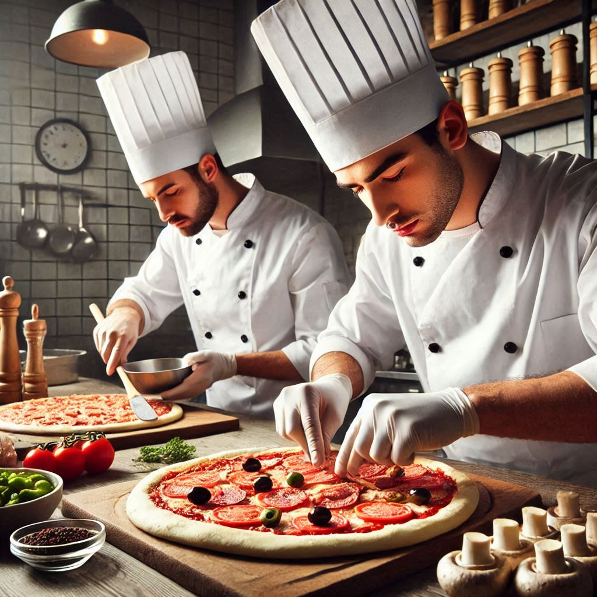

Nuestra Misión
En Pizza Mama Mia, nuestra misión es traer a tu mesa el sabor auténtico de Italia con ingredientes frescos, recetas tradicionales y mucho amor en cada pizza que horneamos.
Nuestro Equipo
Somos un equipo apasionado por la buena comida, liderado por chefs expertos en la preparación de pizzas artesanales y un servicio al cliente excepcional.
Nuestra Historia
Pizza Mama Mia nació en 2024 como un pequeño sueño familiar. Desde entonces, hemos crecido gracias al apoyo de nuestra comunidad y nuestro compromiso de ofrecer la mejor pizza de la ciudad.
Por Qué Elegirnos
En Pizza Mama Mia usamos ingredientes frescos, masas hechas a mano y horneamos nuestras pizzas en hornos tradicionales para garantizar el mejor sabor en cada bocado.